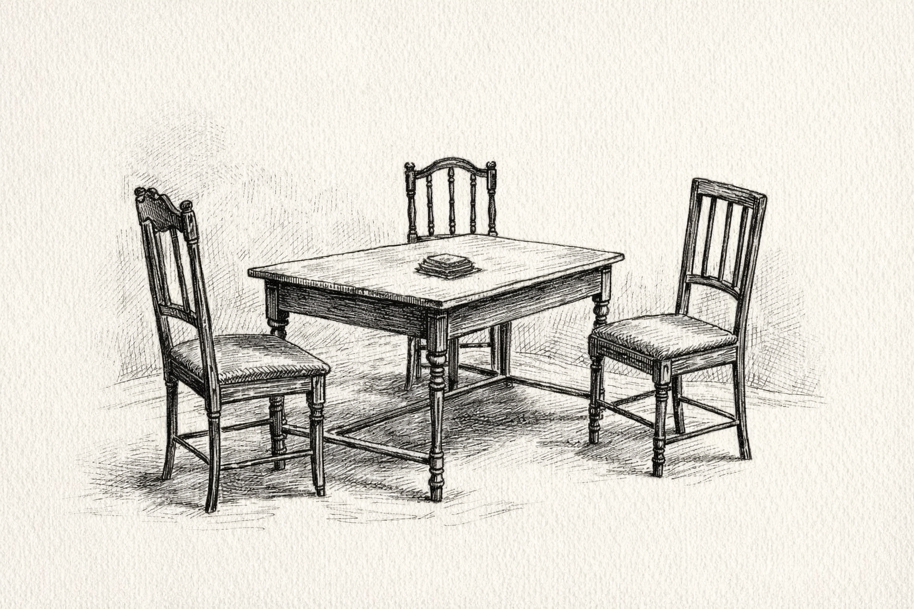

Fluxions
A play
Giacomo Casanova & Isaac Newton & William Stanley Jevons

A room. A table. On the table, a stack of cards. The three men seated around the table.
(turning the first card)
Bodies.
Bodies attract one another according to their mass and their distance.
In my experience, sir, bodies attract one another according to entirely different considerations.
Such as?
Pleasure.
I have been working on pleasure as well, and I have proposed that it can be analyzed using your kind of apparatus, Sir Isaac.
I am glad to hear it. I trust you will cite me — and not that German fellow.
An apparatus for pleasure? That sounds promising. Does it bind the hands, or does it simply encourage cooperation?
I was referring to calculus.
Ah! The calculus of seduction — yes, I have practiced that for many years.
And what are its variables?
Eyes, for a beginning.
Then timing.
Then courage.
(turning to Jevons)
What is he talking about?
I venture to say he is talking about the fair sex.
Indeed I am. Pray, tell me more about this delightful apparatus you have designed.
The apparatus consists in the method of fluxions, by which quantities that vary may be expressed and their rates of change determined.
A most formidable idea, Sir Isaac. For my own part, I propose that pleasures vary in degree, and that their increments may be examined by the same mathematical apparatus you devised. Thus the apparently capricious motions of human conduct may perhaps be reduced to mathematical analysis.
Reduced? But, my dear sir, if pleasure could ever be reduced, Venice would long ago have become a very quiet city.
Even Venice must obey the laws of nature, and these laws imply that one day the sea will reclaim it.
Then let us enjoy her while she still floats.
Gentlemen, perhaps it is time for another card.
(turning the next card)
Value.
Value? Is this a question of virtue, or of gold?
Neither. Value arises from utility — from the degree of pleasure a thing affords when weighed against another.
Value may also arise from transmutation.
Transmutation?
Lead into gold.
If I may say so, Sir Isaac, posterity has tended to admire your other investigations more.
Has gold, then, ceased to be valuable?
Mr. Jevons, do tell me this is not true.
(ever so slightly blushing)
No, sir, I can relieve you of that worry. It merely turns out that, ahem…
That what?
(bracing himself)
That lead cannot be so easily transmuted, I am afraid to say.
I never presumed it would be easy.
(hesitating)
It would seem, Sir Isaac, to be impossible.
Then I shall be delighted to hear that only gold remains gold. Time for another card?
(taking a deep breath)
Perhaps this is the best way forward under the circumstances.
(turning the next card)
Chance.
Ah, chance — the most faithful accomplice of pleasure.
There is no such thing as chance. What men call chance is merely their ignorance of the causes that govern events.
Perhaps so, Sir Isaac. Yet even where the causes remain obscure, man must still choose. And I have learned that some successors of mine have devised another kind of apparatus that can deal with that.
An apparatus for chance? That sounds like a gaming table.
Quite so. Games are precisely what the successors of mine have used as their model.
Games are about taking risks — much like seduction, where the risks are considerable but the rewards of pleasure loom invitingly.
As do the rewards of alchemy.